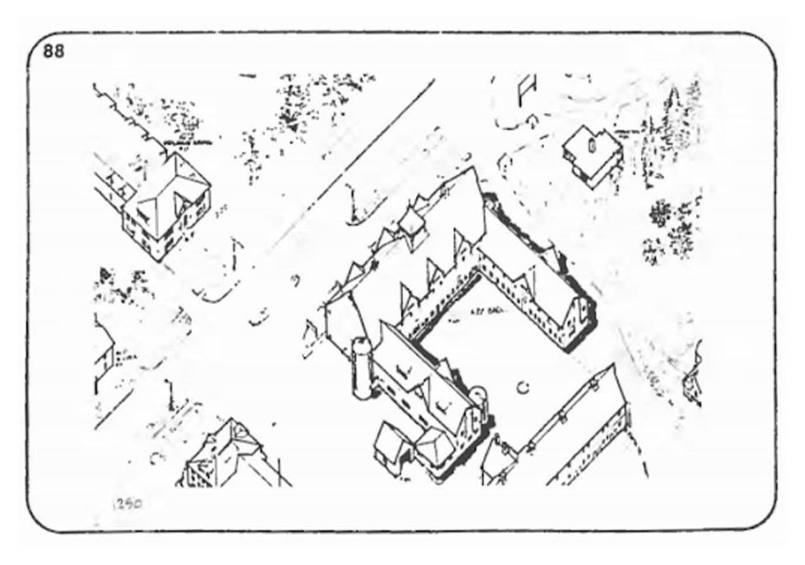

DAIRY BUILDING DIGITIZATION
Professional Work, 2021

A historic drawing from 1983.
The goal of this project was to develop a workflow to bilaterally link a heritage BIM model with a database. The database had to be accessible and simple to use, allowing it to be publicly accessible.